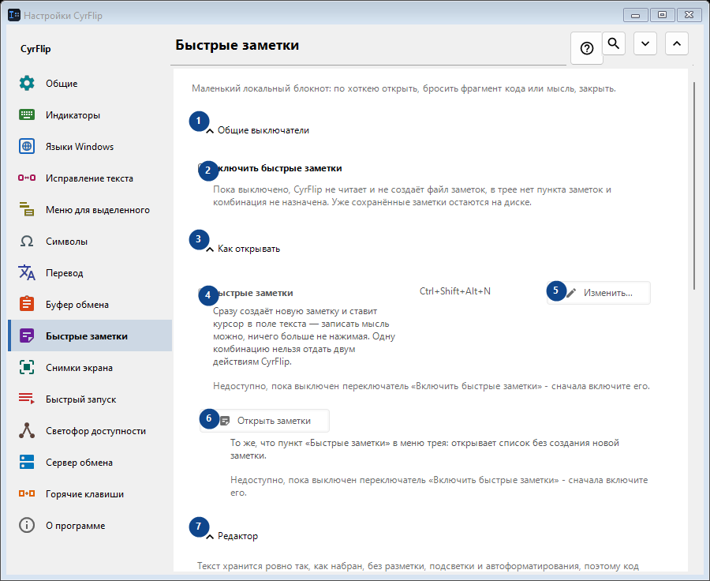
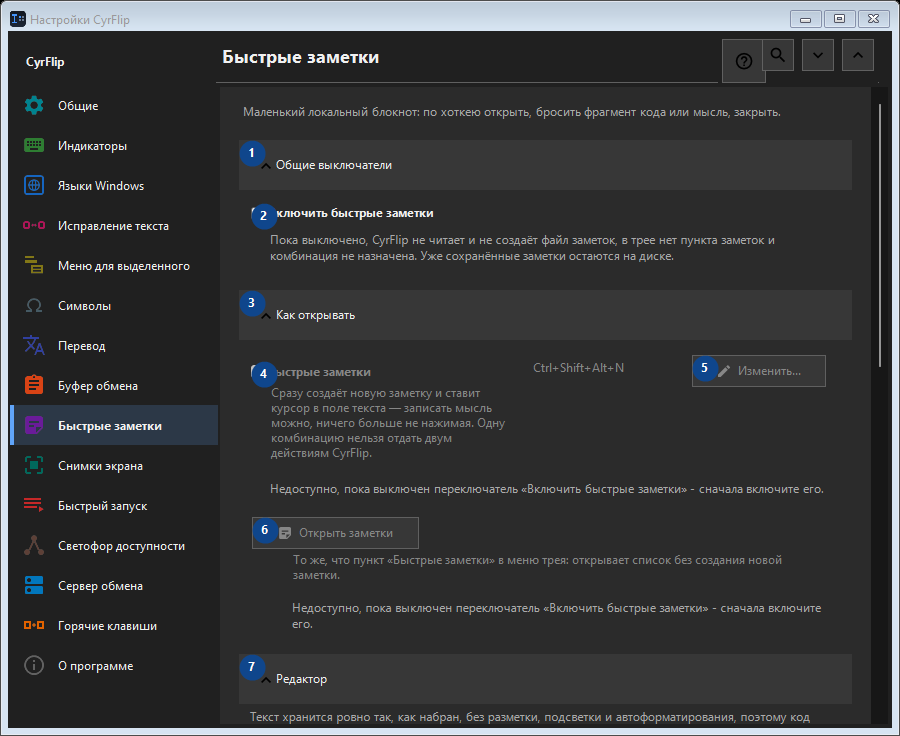

Быстрые заметки
Для чего это окно
Маленький локальный блокнот: по хоткею открыть, бросить фрагмент кода или мысль, закрыть.


Порядок действий
Настройки применяются сразу. Обязательного порядка нет; используйте группы ниже.
Элементы
1. Общие выключатели
Используйте команду, когда нужно указанное действие. Прочитайте запрос подтверждения перед согласием.
Ваши сочетания клавиш2. Включить быстрые заметки
Пока выключено, CyrFlip не читает и не создаёт файл заметок, в трее нет пункта заметок и комбинация не назначена. Уже сохранённые заметки остаются на диске.
Ваши сочетания клавиш3. Как открывать
Используйте команду, когда нужно указанное действие. Прочитайте запрос подтверждения перед согласием.
Ваши сочетания клавиш4. Быстрые заметки
Недоступно, пока выключен переключатель «Включить быстрые заметки» - сначала включите его. Элемент сейчас недоступен. Сначала включите функцию или выберите запись.
Ваши сочетания клавиш5. Изменить - Быстрые заметки
Недоступно, пока выключен переключатель «Включить быстрые заметки» - сначала включите его. Элемент сейчас недоступен. Сначала включите функцию или выберите запись.
Ваши сочетания клавиш6. Открыть заметки
Недоступно, пока выключен переключатель «Включить быстрые заметки» - сначала включите его. Элемент сейчас недоступен. Сначала включите функцию или выберите запись.
Ваши сочетания клавиш7. Редактор
Используйте команду, когда нужно указанное действие. Прочитайте запрос подтверждения перед согласием.
Ваши сочетания клавиш8. Переносить длинные строки в редакторе
Недоступно, пока выключен переключатель «Включить быстрые заметки» - сначала включите его. Элемент сейчас недоступен. Сначала включите функцию или выберите запись.
Ваши сочетания клавиш9. Экспорт и хранение
Используйте команду, когда нужно указанное действие. Прочитайте запрос подтверждения перед согласием.
Ваши сочетания клавиш10. Добавлять даты при экспорте
Недоступно, пока выключен переключатель «Включить быстрые заметки» - сначала включите его. Элемент сейчас недоступен. Сначала включите функцию или выберите запись.
Ваши сочетания клавиш11. Экспортировать все заметки в Markdown...
Недоступно, пока выключен переключатель «Включить быстрые заметки» - сначала включите его. Элемент сейчас недоступен. Сначала включите функцию или выберите запись.
Ваши сочетания клавиш12. Удалить все быстрые заметки
Недоступно, пока выключен переключатель «Включить быстрые заметки» - сначала включите его. Элемент сейчас недоступен. Сначала включите функцию или выберите запись.
Ваши сочетания клавиш13. Перенос на другой компьютер
Используйте команду, когда нужно указанное действие. Прочитайте запрос подтверждения перед согласием.
Ваши сочетания клавиш14. Экспортировать...
Один открытый текстовый файл с заметками и выбранной историей буфера: его можно прочитать в любом редакторе или на телефоне и импортировать в CyrFlip на другом компьютере. Файл не шифруется. Импорт показывает, что будет добавлено, и ничего не удаляет.
Ваши сочетания клавиш15. Импортировать...
Используйте команду, когда нужно указанное действие. Прочитайте запрос подтверждения перед согласием.
Ваши сочетания клавиш